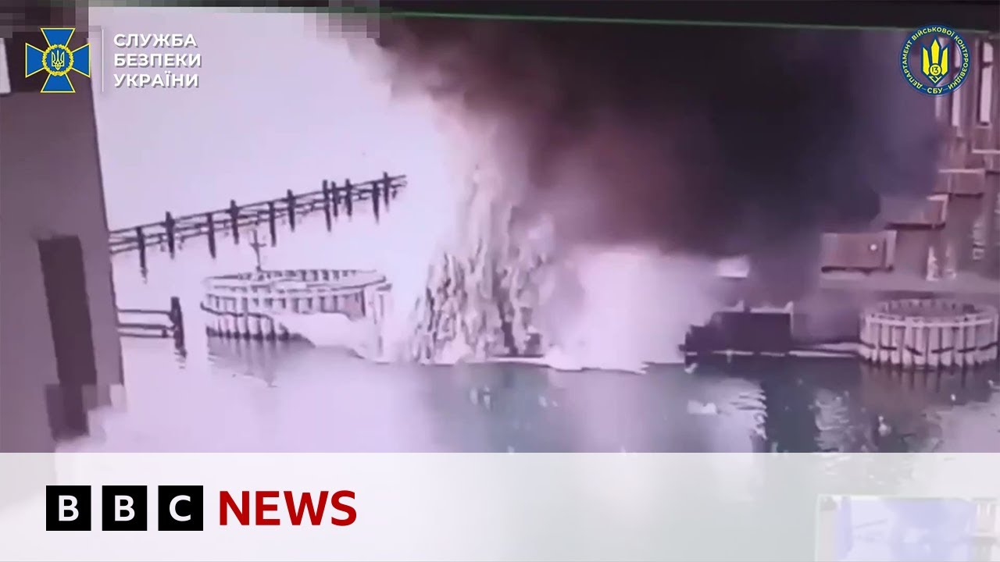

【俄罗斯建造的克里米亚大桥遭水下爆炸袭击，乌克兰称 | BBC新闻】
Summary: Ukraine claims another major sabotage operation against the strategic Crimean bridge linking Russia to the occupied peninsula, using underwater explosives detonated early this morning.
摘要： 乌克兰声称对连接俄罗斯与被占半岛的战略性克里米亚大桥实施了又一次重大破坏行动，使用水下炸药于今晨引爆。

⏱️ Estimated Reading Time: 6 min
To Ukraine because Kee says it's carried out another major sabotage operation against a strategic Russian target, the Crimeir bridge linking Russia to the occupied peninsula.
乌克兰基辅方面表示，他们对连接俄罗斯与被占半岛的战略目标克里米亚大桥实施了又一次重大破坏行动。
Intelligence services in Kev say explosives were planted underwater and detonated just before 5:00 this morning.
基辅情报部门称，炸药被安置在水下，并于今晨5点前引爆。
Those the picture of that attack.
这是袭击的画面。
So, let's head to Kev and our correspondent Paul Adams who is there.
现在让我们前往基辅，听听在那里的记者保罗·亚当斯的报道。
And Paul, tell us a little more about what the authorities have been saying.
保罗，请告诉我们当局都说了些什么。
Yeah, Matthew, this is the second time in two days that the SPU has been claiming uh responsibility for a major operation.
是的，马修，这是两天内第二次乌克兰安全局声称对一次重大行动负责。
Clearly nothing on the scale of the attacks on the Russian air bases on Sunday, but nevertheless a very important and significant target.
显然规模不及周日对俄罗斯空军基地的袭击，但这仍是一个非常重要且具有象征意义的目标。
The Kirch Bridge has been the object of uh Ukrainian anger and hatred ever since it was opened in 2018.
自2018年开通以来，克里米亚大桥一直是乌克兰愤怒与仇恨的对象。
It was a pet project of Vladimir Putin.
这是普京的个人项目。
He personally opened it just four years after Russia annexed the Crimean Peninsula.
在俄罗斯吞并克里米亚半岛仅四年后，他亲自为其揭幕。
It formed a link between the Russian mainland and of course what Ukrainians continue to regard as occupied territory.
它连接了俄罗斯本土与被乌克兰人视为被占领土的地区。
In 2022, the Ukrainians tried to blow it up.
2022年，乌克兰人曾试图炸毁它。
They used a truck bomb.
他们使用了一辆卡车炸弹。
I was here at the time.
我当时就在这里。
I remember the sense of absolute euphoria that greeted that operation.
我记得那次行动带来的狂喜情绪。
Now, as far as today's operation is concerned, h it doesn't appear to have done a significant amount of damage.
就今天的行动而言，似乎并未造成重大破坏。
Uh the bridge was reopened a short time afterwards, although we understand that this afternoon the bridge was closed again, possibly following a second explosion.
大桥在不久后重新开放，但我们了解到今天下午它再次关闭，可能因为第二次爆炸。
So, it is kind of an ongoing situation.
因此，目前情况仍在发展中。
But I think the kind of overall message here is that Ukraine is uh showing that is on the front foot, that it is able to hit Russian and targets sort of at will uh and that the Kirch Bridge remains very much in their sights.
但总体信息是，乌克兰展现出主动权，能够随意打击俄罗斯目标，而克里米亚大桥仍是他们的重点。
Yes, one remembers and recalls Donald Trump saying to President Silinski, "You haven't got any cards to play."
是的，有人记得特朗普曾对泽连斯基总统说：“你们无牌可打。”
Well, perhaps over the last 48 hours, we've seen a different story.
但在过去48小时，我们看到了不同的故事。
But in terms of an attack like this after what we saw over the weekend, it is strategic but also very symbolic as well.
但周末事件后，这样的袭击既具战略性，又极具象征意义。
It's highly symbolic.
它具有高度象征性。
It is regarded as a massive symbol of Russian occupation.
它被视为俄罗斯占领的巨大象征。
That is how all Ukrainians regard it.
所有乌克兰人都这么认为。
And it is also, as you say, strategic.
正如你所说，它也具有战略性。
In the run-up to the full-scale invasion of Ukraine in 2022, we saw all kinds of military traffic passing this way and that over the Kirch Bridge, which is both a railway and a road bridge.
在2022年全面入侵乌克兰前夕，我们看到各类军事交通通过这座铁路公路两用的克里米亚大桥。
Uh and then after that truck bomb, we saw it closed for quite some time.
卡车炸弹事件后，大桥关闭了相当长一段时间。
Uh at uh for a long time after its opening in 2018, it represented the only link between Russia uh and occupied Crimea.
2018年开通后的很长时间里，它是俄罗斯与被占克里米亚之间的唯一纽带。
Of course, after the invasion, uh, as Russia seized all that territory north of the Sea of Azov, uh, in southern Ukraine, uh, the the links with Crimea became twofold, but it remains an important logistical route, uh, for the the Russian military.
当然，入侵后，随着俄罗斯夺取乌克兰南部亚速海以北领土，与克里米亚的通道变为两条，但它仍是俄军的重要后勤路线。
Uh, it is beyond the reach of artillery and and and most of the other uh, weaponry that Ukraine has at its disposal.
它超出了乌克兰火炮及大多数其他武器的射程。
But we know from repeated efforts that they have explored all sorts of ways to try and blow it up.
但从多次尝试可知，他们探索了各种方法试图炸毁它。
This appears to have been a significant amount of explosive in excess of a thou the the equivalent of a thousand ton uh kilograms of TNT.
这次似乎使用了大量炸药，超过一千公斤TNT当量。
Uh the Russians uh who are reacting online and various telegram channels are talking about the use of maritime drones.
俄罗斯人在网络和各电报频道上讨论使用了海上无人机。
We know that the Ukrainians have experimented with those too.
我们知道乌克兰人也试验过这些。
And so everyone knows that one way or another, the Ukrainians are determined, uh, to at the very least interrupt traffic along the bridge, uh, and at most to bring it down altogether.
因此所有人都明白，无论如何乌克兰人决心至少中断大桥交通，甚至彻底摧毁它。
Yes. And I thought an interesting line in the details we've heard so far is that the explosives were planted underwater over a lengthy period of time.
是的。我认为目前听到的细节中，有趣的一点是炸药被长期安置在水下。
Paul Adams there in Kev.
保罗·亚当斯在基辅的报道。